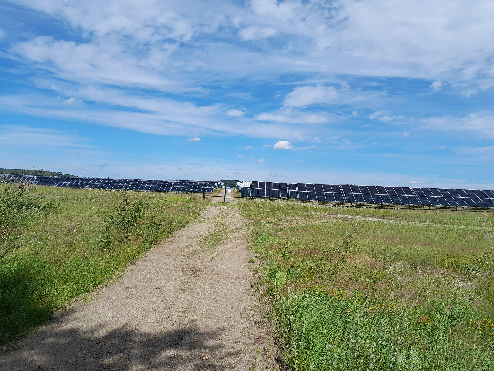

Farma fotowoltaiczna 2 × 1 MW w obrębie Mirosławice, gmina Trzebiatów, województwo zachodniopomorskie.
PV Mirosławice — a 2 × 1 MW ground-mounted solar farm near Trzebiatów, West Pomerania, Poland.

Dwie naziemne instalacje fotowoltaiczne po 1 MW (SPV Trzebiatów I i SPV Trzebiatów II) powstają na działce ewidencyjnej nr 128/2 o powierzchni 4,48 ha w obrębie Mirosławice. Instalacje będą przyłączone do sieci średniego napięcia 15 kV Enea Operator.
Granica działki 128/2 według danych ewidencji gruntów z usługi ULDK GUGiK. Podkład mapy © współtwórcy OpenStreetMap.